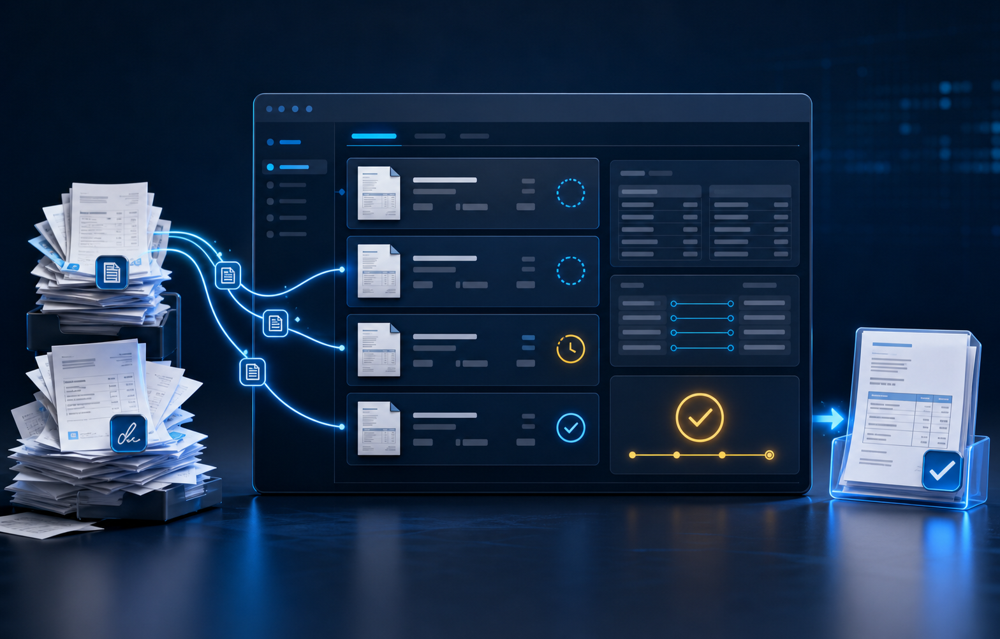
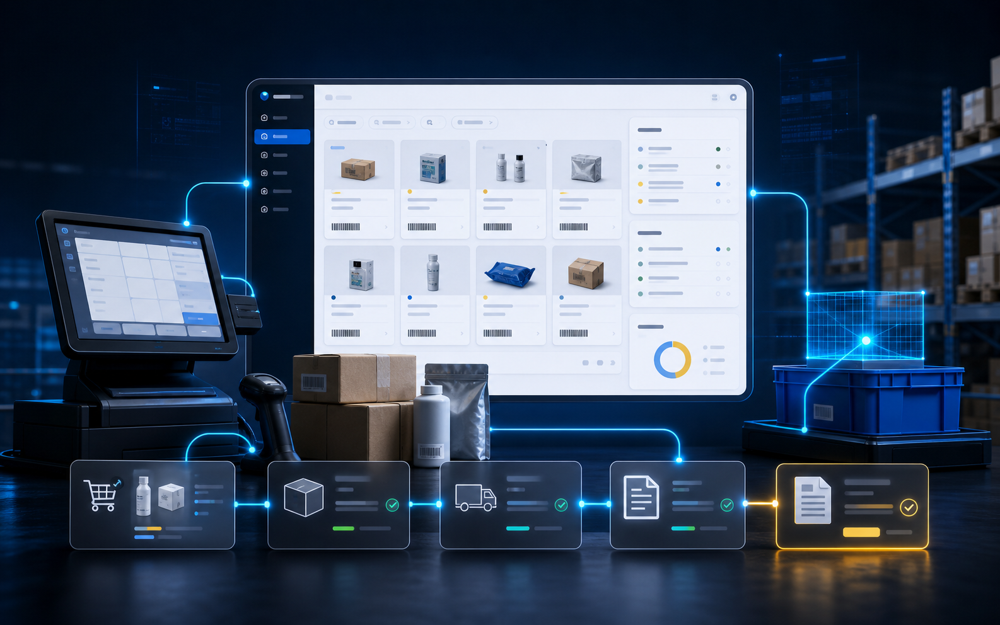

Понимаем задачу
Сначала фиксируем, что именно мешает работе: документы, сроки, сотрудники, склад, маркировка или учет.
Каталог направлений Saby
Saby закрывает много задач: электронные документы, отчетность, бухгалтерию, кадры, торговлю, склад и маркировку. Если вы не знаете, с чего начать, выберите ситуацию, которая больше всего похожа на вашу.
Быстрый выбор

Первичка и сверки разъехались? Бухгалтерия и учет Для ежедневных документов, счетов, сверок и согласований внутри компании, когда нужно навести порядок без лишней покупки. Смотреть решение → Кадровые документы ходят по чатам? Кадры и зарплата Для заявлений, приказов, подписей, КЭДО и личного кабинета сотрудника без бумажного хвоста. Смотреть решение →
Касса, склад и документы не сходятся? Торговля и склад Для точек продаж, касс, склада, УПД и сотрудников на местах, чтобы продажи, остатки и документы сходились. Смотреть решение → Маркировка и госсистемы путают команду? Маркировка Для товаров, связанных с Честным знаком, ЕГАИС, Меркурием, складом и документами. Смотреть решение →Основные продукты
На каждой странице есть ситуации, состав работ, факторы цены, мини-кейс и ответы на вопросы. Это помогает не покупать лишнее и не запускать сервис вслепую.
Сначала фиксируем, что именно мешает работе: документы, сроки, сотрудники, склад, маркировка или учет.
Подбираем Saby не по названию лицензии, а по тому, какую ежедневную задачу нужно закрыть.
Уточняем регион, пользователей, организации и работы по настройке, чтобы подготовить понятную смету.
Помогаем команде пройти первый рабочий сценарий и понять, где смотреть статус.
Если сомневаетесь
Достаточно описать, что сейчас неудобно: документы, сроки, сотрудники, склад, маркировка или заявки. Мы предложим стартовый вариант и объясним, почему именно он.